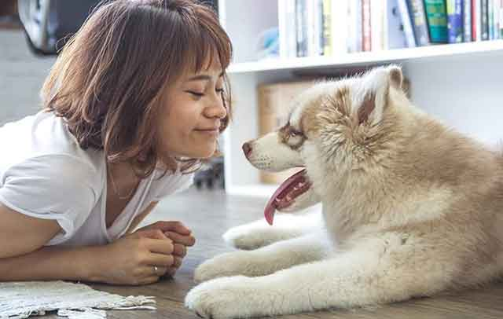
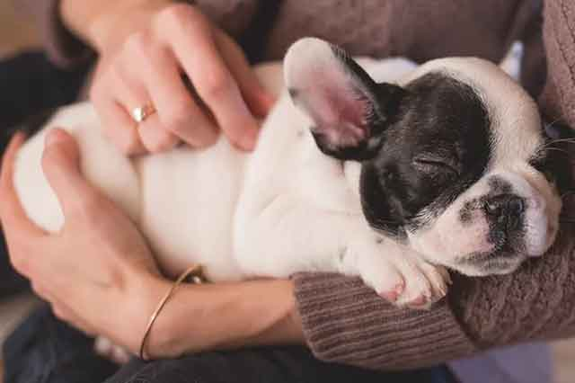

유기견 입양 시 주의사항!
반려견 1000만 시대를 자랑하지만, 한해동안 버림을 받는 유기견수도 그만큼 많습니다.정말 안타깝지만,반려동물을 입양하기 전에 반려견에 대한 책임감을 가지고있지 않은 상태에서 키운 결과라고 생각합니다. 그래서 유기견을 입양하자는 의견이 많아 요즘은 유기견 입양이 활발하게 이뤄지고 있어요. 하지만 유기견은 다른 강아지들을 입양할 때보다 더욱더 주의가 필요합니다! 유기견 입양 시 주의사항, 알아볼게요!
"유기견일 때, 더욱더 까다롭게!"
유기견을 입양할 때는 자신이 끝까지 키울수 있다는 생각으로 입양해야 합니다. 유기견에게 재파양은 처음 상처를 입었을 때보다 더 큰 상처로 다가올 수 있기 때문입니다. 따라서 입양 자체를 생각하는 따뜻한 마음은 좋지만, 재파양 상황을 고려해 충분히 고민해보신 후에 가족으로 맞이하는 것이 중요합니다.
"엄격한 잣대로 스스로 평가하기"
유기견 입양을 할 때는 내가 키우면 잘키울수 있겠다라는 생각보다는 몇 가지 기준을 두고 확실하게 실행할 수 있는지를 생각해야 합니다.
1. 반려견이 우리 집에 당장 적응하지 못해도 참고 기다려 줄 수 있는가?
2. 모든 가족이 다같이 반려견을 기다려줄 수 있는가?
3. 반려견 건강 문제가 생겨도 책임질 수 있는가?
4. 죽을떄까지 우리 가족처럼,한 가족처럼 함께할 수 있는가?
까다롭고 힘든 질문을 자신에게 던져보고, 이에 대한 대답이 확실해 질 때 입양할 수 있으면 좋겠습니다.
"유기견을 이해하기"
처음 입양되는 강아지들과는 달리 첫 주인에게 버려진 반려견은 다음 주인을 만날때 더욱더 경계를 할수밖에 없습니다. 따라서 일반적인 반려견과는 다르게 긴장을 많이 하고, 불안감이 클수 밖에 없는데요. 이러한 상황을 충분히 이해해주고 보호소에서 있었던 기간이 길었던 만큼 그러한 상황을 충분히 이해해줄수 있어야 합니다.
"새로운 가족, 훈련도 새롭게"
유기견을 입양하면 아무리 성견이라 하더라도 새로운 환경에 적응하기위해 훈련이 필요합니다. 우선, 보호소에서 데려올 때 반려견에 대해 충분히 전달받고 그런 특징을 기반으로 훈련을 이어나가야 합니다.
적응력이 부족하고, 연습에 어려움을 느낄 수 있지만 이런 부분을 충분히 이해하고 기다리면서 새로운곳에 잘 적응할수 있도록 도와줘야합니다.
유기견을 입양하는 일은 정말 좋은 일입니다. 앞으로도 이런 문화는 지속되야겠죠? 하지만 그보다 앞서 필요한 것은 반려견을 끝까지 책임 질수있는 능력, 기다림을 가지고 잘 적응시켜 줄수있는 노력이 필요합니다. 더욱더 신중함이 필요한 유기견 입양! 주의사항 꼭 참고하셔서 건강한 입양 문화를 만들어 갔으면 좋겠습니다!
[출처] 유기견 입양 시 주의사항! ｜ 작성자 꽁치마루